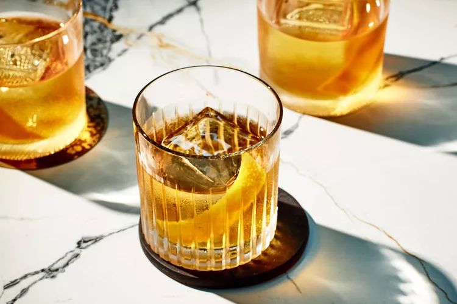

1. Old Fashioned
A classic of classics, the drink contains whiskey and is considered one of the first cocktails in history - hence its name.

According to cocktail historian David Wondrich, the Old Fashioned is a direct descendant of the earliest known cocktail,
which in 1806 consisted of "a little water, a little sugar, a lot of liquor and a couple splashes of bitters." Purists may
scoff at the inclusion of a muddled cherry, but if it brings you pleasure, don't hold back.
Ingredients
Bourbon or rye whiskey
- This is the main ingredient, so you’ll want to pick a quality bottle.
It doesn’t have to be expensive — it just has to be one you like!
Some of my favorites are Basil Hayden’s, Four Roses, and Rowan’s Creek.
Bitters
- Aromatic Angostura bitters add depth to the cocktail.
Sugar
- A little demerara sugar or regular granulated takes a little bit of the bourbon bite out of the cocktail.
Orange
- Twist the peel over the glass before adding so the orange oils enhance the aroma of the cocktail.
Cherries
- While optional, a speared Luxardo cherry adds a nice final touch.
How to prepare
Dissolve the sugar.
- Stir water, demerara sugar, and Angostura bitters together in a mixing glass or cocktail shaker until the sugar is nearly dissolved.
Mix the cocktail.
- Fill the mixing glass or cocktail shaker with ice, add 2 ounces bourbon, and stir until well-chilled.
Pour the cocktail through a strainer into the glass.
- Twist the orange peel directly over the cocktail’s surface, then garnish with the peel. Garnish with 1 to 2 Luxardo cherries if using.
Helpful Tips
- Swap sugar for maple syrup or honey.
- Use smoky mezcal instead of bourbon or rye whiskey.
- Chill the glass in the freezer for at least 5 minutes before serving to keep the cocktail extra-cold.
Enjoy your Old Fashioned!